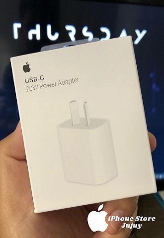
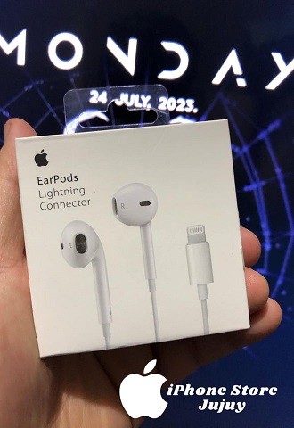

Tu Destino para Accesorios de iPhone de Alta Calidad
En iPhone Store Jujuy, entendemos que tu iPhone es más que solo un teléfono; es una extensión de tu estilo de vida, una herramienta esencial y una declaración de tu personalidad. Por eso, nos enorgullece presentarte una amplia gama de accesorios cuidadosamente seleccionados para tu iPhone que te permitirán sacar el máximo provecho de tu dispositivo y llevar tu experiencia al siguiente nivel.
CARGADORES
🔌 Potencia de 20W: Este cargador ofrece una potencia impresionante de 20 vatios para cargar tu iPhone de manera rápida y segura. Olvídate de largas esperas y disfruta de un dispositivo listo en poco tiempo.
AURICULARES
🎵 Calidad de Sonido Premium: Sumérgete en un sonido nítido y claro con bajos profundos y agudos definidos. Los EarPods con conector Lightning ofrecen una calidad de sonido excepcional que te permitirá disfrutar al máximo de tu música, películas y llamadas.